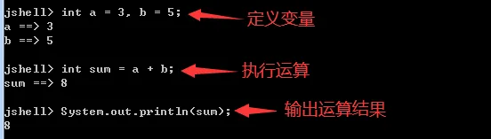
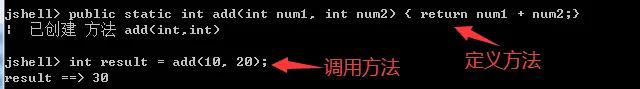
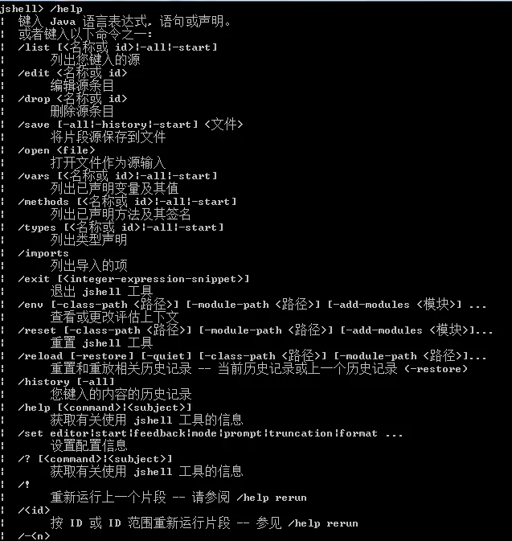
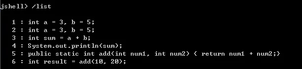
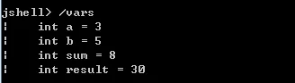
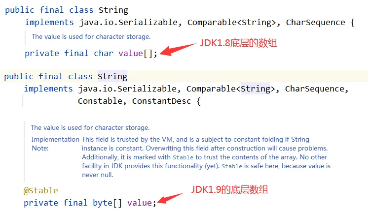
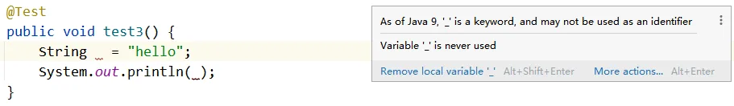

Java9经过4次推迟，历经曲折的Java9最终在2017年9月21日发布，提供了超过150项新功能特性。
_作为标识符了。char[] 变成了 byte[]。takeWhile(), dropWhile(), ofNullable() 和 iterate()jShell命令是Java9引进的新特性，像Python和Scala之类的语言早就有交互式编程环境REPL (read-evaluate-print-loop)，以交互式的方式对语句和表达式进行求值。开发者只需要输入一些代码，就可以在编译前获得对程序的反馈。而之前的Java 版本要想执行代码，必须创建文件、声明类、提供测试方法方可实现。
我们打开DOS命令窗口，然后输入jshell，就能进入交互式编程环境REPL，如下图所示：
通过jShell命令，我们能够定义一些变量，并执行相关的运算操作，如下图所示：





众所周知，所有被打开的系统资源，比如流、文件、Socket连接等，都需要被开发者手动关闭，否则随着程序的不断运行，资源泄露将会累积成重大的生产事故。
在Java7以前，我们想要关闭资源就必须的finally代码块中完成。
【示例】Java7之前资源的关闭的方式
public void copyFile1(File srcFile, File destFile) {
FileInputStream fis = null;
FileOutputStream fos = null;
try {
// 实例化IO流（输入流和输出流）
fis = new FileInputStream(srcFile);
fos = new FileOutputStream(destFile);
// 拷贝文件（存储和读取）
int len = 0;
byte[] bytes = new byte[1024];
while ((len = fis.read(bytes)) != -1) {
fos.write(bytes, 0, len);
}
} catch (FileNotFoundException e) {
e.printStackTrace();
} catch (IOException e) {
e.printStackTrace();
} finally {
// 关闭资源
if (fis != null) {
try {
fis.close();
} catch (IOException e) {
e.printStackTrace();
}
}
if (fos != null) {
try {
fos.close();
} catch (IOException e) {
e.printStackTrace();
}
}
}
}
Java7及以后关闭资源的正确姿势：try-with-resource，该语法格式为：
try(/*实例化需要关闭资源的对象或引用需要关闭资源的对象*/){
// 书写可能出现异常的代码
} catch(Exception e) {
// 处理异常
}
使用try-with-resource来自动关闭资源，则需要关闭资源的对象对应的类就必须实现Java.lang.AutoCloseable接口，该接口中提供了一个close()的抽象方法，而自动关闭资源默认调用的就是实现于Java.lang.AutoCloseable接口中的close()方法。
因为FileInputStream类和FileOutputStream类都属于Java.lang.AutoCloseable接口的实现类，因此此处文件拷贝的操作就可以使用try-with-resource来自动关闭资源。
【示例】Java7之后资源的关闭的方式
public void copyFile(File srcFile, File destFile) {
// 实例化IO流（输入流和输出流）
try (FileInputStream fis = new FileInputStream(srcFile);
FileOutputStream fos = new FileOutputStream(destFile)) {
// 拷贝文件（存储和读取）
int len = 0;
byte[] bytes = new byte[1024];
while ((len = fis.read(bytes)) != -1) {
fos.write(bytes, 0, len);
}
} catch (FileNotFoundException e) {
e.printStackTrace();
} catch (IOException e) {
e.printStackTrace();
}
}
通过try-with-resource来关闭放资源，即使资源很多，代码也可以写的很简洁，如果用Java7之前的方式去关闭资源，那么资源越多，用finally关闭资源时嵌套也就越多。
在Java9之后，为了避免在try后面的小括号中去实例化很多需要关闭资源的对象（复杂），则就可以把需要关闭资源的多个对象在try之前实例化，然后在try后面的小括号中引用需要关闭资源的对象即可，从而提高了代码的可读性。
【示例】Java9之后的使用方式
public void copyFile(File srcFile, File destFile) throws FileNotFoundException {
// 实例化IO流（输入流和输出流）
FileInputStream fis = new FileInputStream(srcFile);
FileOutputStream fos = new FileOutputStream(destFile);
// 拷贝文件（存储和读取）
try (fis; fos) {
int len = 0;
byte[] bytes = new byte[1024];
while ((len = fis.read(bytes)) != -1) {
fos.write(bytes, 0, len);
}
} catch (IOException e) {
e.printStackTrace();
}
}
在以上代码中，表达式中引用了fis和fos，那么在fis和fos就自动变为常量啦，也就意味着在try代码块中不能修改fis和fos的指向，从而保证打开的资源肯定能够关闭。
在Java8及其之前，String底层采用char类型数组来存储字符；在Java9及其以后，String底层采用byte类型的数组来存储字符。将char[]转化为byte[]，其目的就是为了节约存储空间。

在Java8版本中，接口中支持“公开”的静态方法和公开的默认方法；在Java9版本中，接口中还允许定义“私有”的静态方法和成员方法，但是不能定义私有的默认方法。
【示例】演示接口中的私有静态方法和成员方法
/**
* 接口（JDK1.9）
*/
public interface Flyable {
// 私有的静态方法
private static void staticMethod() {
System.out.println("static method ...");
}
// 私有的成员方法
private void method() {
System.out.println("default method ...");
}
}
在Java8及其之前，标识符可以独立使用_来命名。
String _ = "hello";
System.out.println(_);
但是，在Java9中规定_不能独立命名标识符了，如果使用就会报错：

在Java9版本中，我们可以通过List、Set和Map接口提供的of(E... elements)静态方法来创建不可变集合。通过此方式创建的不可变集合，我们不但不能添加或删除元素，并且还不能修改元素。
【示例】创建不可变集合
// 创建不可变List集合
List<Integer> list = List.of(1, 2, 3, 4, 5);
System.out.println(list);
// 创建不可变Set集合
// 注意：如果Set集合中有相同的元素，则就会抛出IllegalArgumentException异常。
Set<Integer> set = Set.of(1, 2, 3, 4, 5, 4);
System.out.println(set);
// 创建不可变Map集合
Map<Integer, String> map = Map.of(123, "武汉", 456, "成都");
System.out.println(map);
Arrays.asList与List.of的区别：
List.of：不能向集合中添加或删除元素，也不能修改集合中的元素。
Arrays.asList：不能向集合中添加或删除元素，但是可以修改集合中的元素。
【示例】Arrays.asList与List.of的区别
// 通过Arrays.asList()方法创建不可变集合
List<Integer> list1 = Arrays.asList(1, 2, 3, 4, 5);
// list1.add(6); // 抛出UnsupportedOperationException异常
// list1.remove(2); // 抛出UnsupportedOperationException异常
list1.set(2, 33); // 没有问题
System.out.println(list1); // 输出：[1, 2, 33, 4, 5]
// 通过List.of()方法创建不可变集合
List<Integer> list2 = List.of(1, 2, 3, 4, 5);
// list2.add(6); // 抛出UnsupportedOperationException异常
// list2.remove(2); // 抛出UnsupportedOperationException异常
// list2.set(2, 33); // 抛出UnsupportedOperationException异常